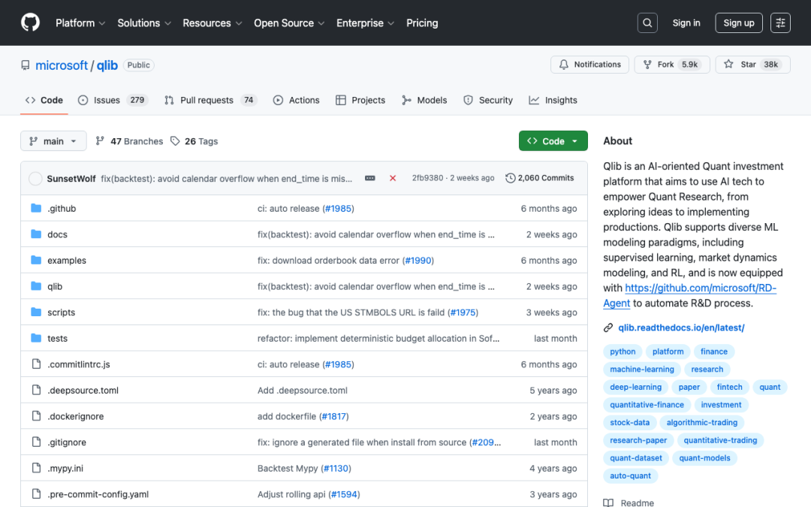
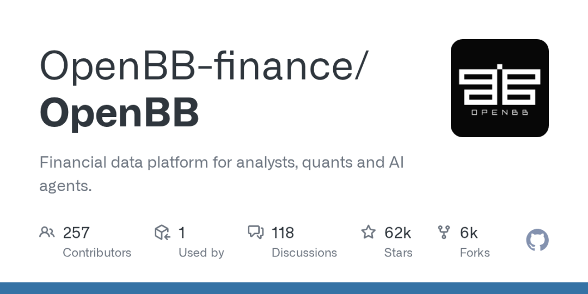
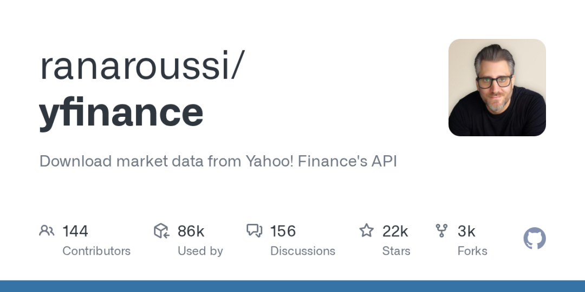
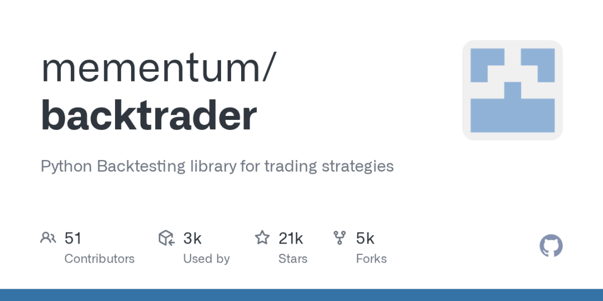
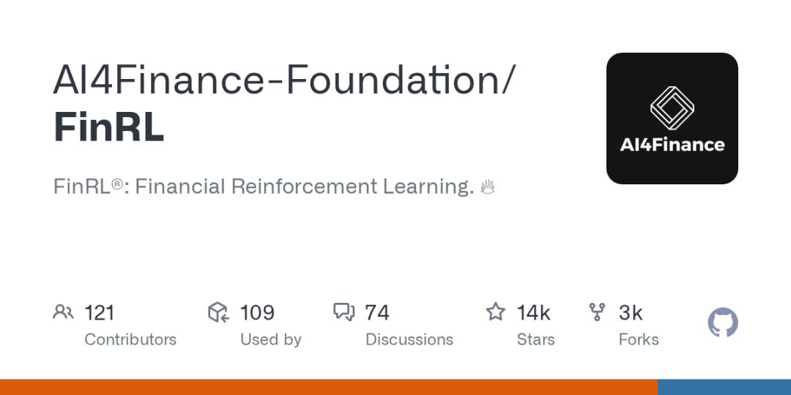

1. Microsoft Qlib — 微软出品的 AI 量化投资平台

GitHub: https://github.com/microsoft/qlib
⭐ 37,960 Stars | 🍴 5,894 Forks | 📄 MIT License
微软研究院出品的重量级项目。Qlib 定位为「AI 驱动的量化投资平台」，目标是用 AI 技术赋能量化研究的全流程——从探索想法到生产部署。
核心亮点：
支持多种 ML 建模范式：监督学习、市场动态建模、强化学习 内置高质量金融数据集和预处理管道 集成微软自研的 RD-Agent，可自动化研发流程 完善的文档和活跃的社区维护
适合人群： 有 Python 和机器学习基础的量化研究者，想用 AI 做系统化投资研究的开发者。
2. OpenBB — 开源版彭博终端

GitHub: https://github.com/OpenBB-finance/OpenBB
⭐ 62,276 Stars | 🍴 6,072 Forks
本榜单 Star 数最高的项目。OpenBB 的野心是做「开源版彭博终端」，为分析师、量化交易员和 AI Agent 提供统一的金融数据平台。
核心亮点：
聚合股票、期权、固定收益、经济数据等多类数据源 提供 Python SDK 和 REST API，方便集成 支持 AI Agent 直接调用，适配 LLM 时代的工作流 活跃的开发团队，持续更新中
适合人群： 需要一站式金融数据接口的开发者，想搭建自己投资分析系统的个人投资者。
3. yfinance — 最流行的雅虎财经数据接口

GitHub: https://github.com/ranaroussi/yfinance
⭐ 21,826 Stars | 🍴 3,104 Forks | 📄 Apache 2.0
如果你只想快速获取股票数据，yfinance 是最简单的选择。一行代码就能拉取历史行情、财务报表、分红记录等数据。
核心亮点：
极简 API：yf.download("AAPL") 即可获取苹果股票数据 支持批量下载、多线程加速 覆盖全球主要市场的股票、ETF、基金数据 与 Pandas 无缝集成，数据分析一步到位
适合人群： 所有需要金融市场数据的 Python 开发者，量化入门的第一个工具。
4. Backtrader — 老牌 Python 回测框架

GitHub: https://github.com/mementum/backtrader
⭐ 20,549 Stars | 🍴 4,929 Forks | 📄 GPL-3.0
Python 量化回测领域的「老大哥」。从 2015 年至今，Backtrader 以其灵活的架构和丰富的功能，成为最受欢迎的策略回测框架之一。
核心亮点：
事件驱动架构，支持多数据源、多策略、多时间框架 内置大量技术指标和分析工具 支持实盘交易对接（Interactive Brokers 等） 强大的可视化功能，策略表现一目了然
适合人群： 想要系统化回测交易策略的投资者，从入门到进阶都能用。
5. Machine Learning for Trading — AI 交易实战教科书
GitHub: https://github.com/stefan-jansen/machine-learning-for-trading
⭐ 16,663 Stars | 🍴 4,997 Forks
这不只是一个代码仓库，而是《Machine Learning for Algorithmic Trading》第二版的完整配套代码。从数据获取到模型部署，覆盖了 ML 在交易中的方方面面。
核心亮点：
涵盖 NLP 情绪分析、深度学习、强化学习等前沿技术 完整的 Jupyter Notebook，可直接运行学习 从基础的因子模型到复杂的 GAN 合成数据，循序渐进 配套书籍提供理论支撑，代码仓库提供实践指导
适合人群： 想系统学习 AI 量化交易的开发者，适合作为进阶学习路径。
6. FinRL — 用强化学习做金融交易

GitHub: https://github.com/AI4Finance-Foundation/FinRL
⭐ 14,051 Stars | 🍴 3,147 Forks | 📄 MIT License
AI4Finance 基金会出品，专注于将深度强化学习（DRL）应用于金融交易。如果你对 AlphaGo 式的 AI 交易感兴趣，这个项目是最佳起点。
核心亮点：
提供完整的 DRL 交易框架：环境、智能体、训练流程 支持股票、期货、外汇等多种交易场景 集成 OpenAI Gym 接口，方便 RL 研究者上手 丰富的教程和论文支撑
适合人群： 对强化学习和金融交叉领域感兴趣的研究者和开发者。
总结对比
入门路线建议： yfinance（获取数据）→ Backtrader（回测策略）→ Qlib / FinRL（AI 进阶）
投资有风险，但用开源工具武装自己的分析能力，永远是值得的。